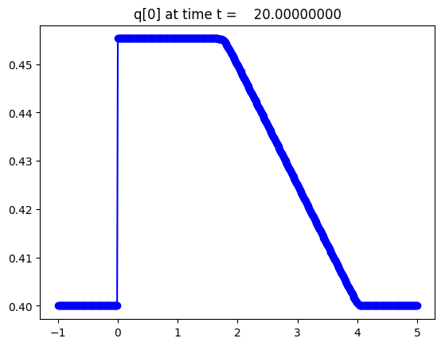

< < < Index > > >

Image source: /Users/rjl/Downloads/clawpack-v5.6.0_test/clawpack-v5.6.0_galleries/apps/fvmbook/chap17/onramp/_plots/frame0010fig0.png
Other frames: 0 1 2 3 4 5 6 7 8 9 10 All Frames